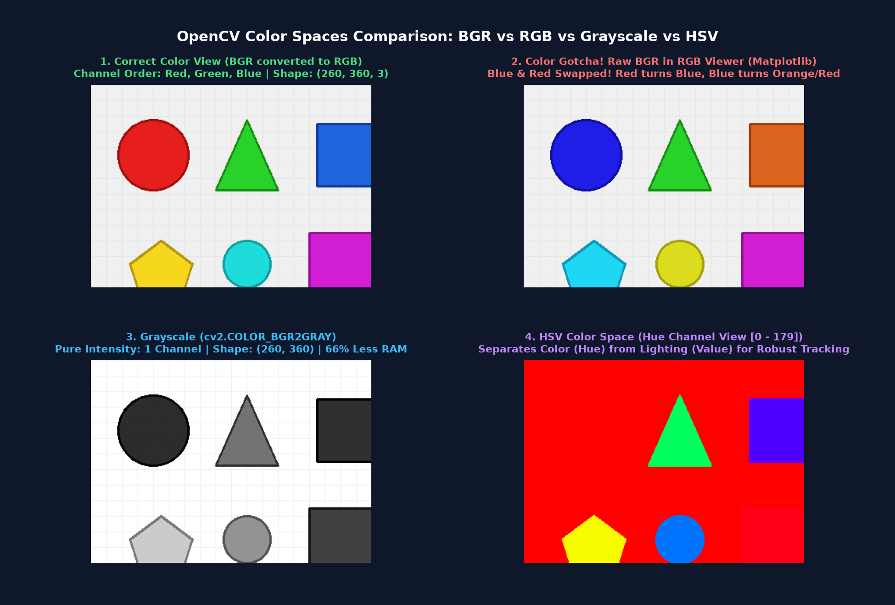
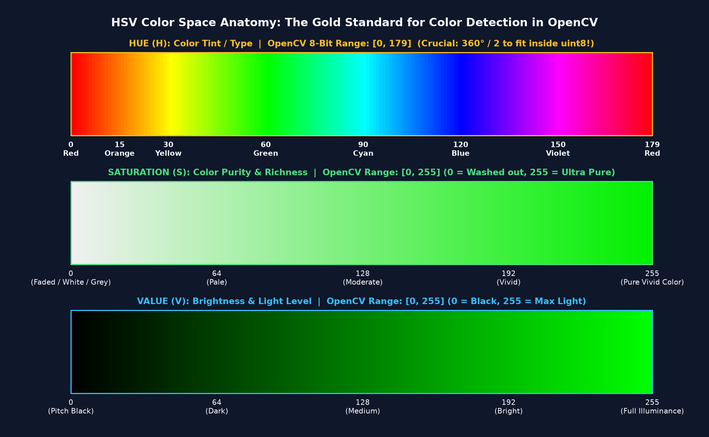
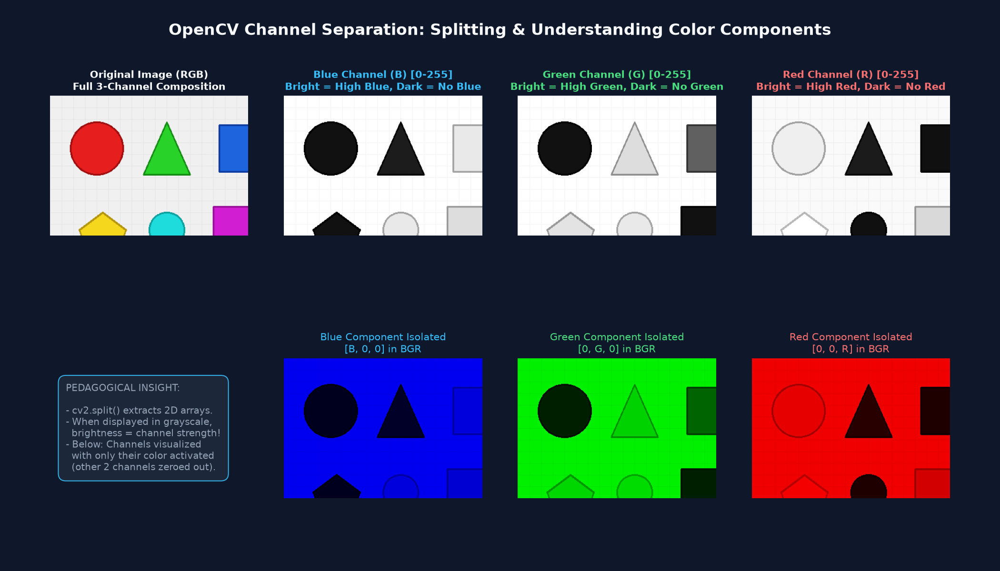
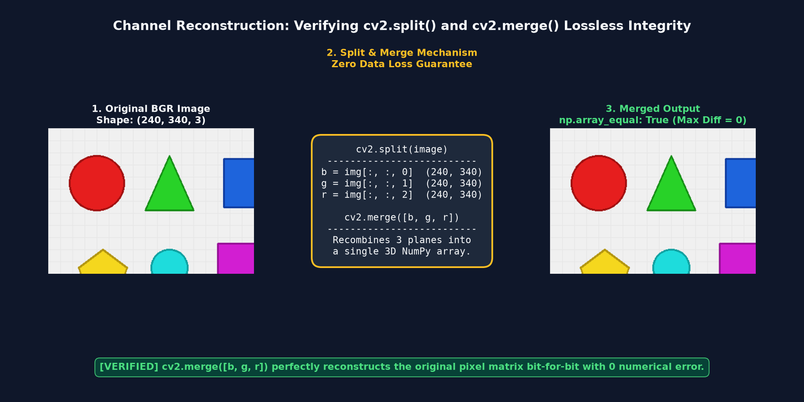
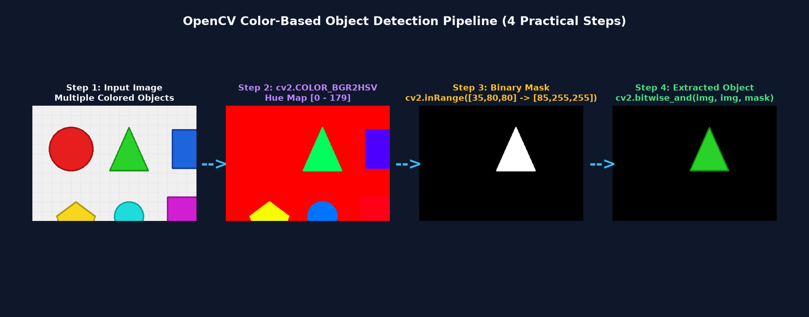

Master how digital images represent colors, convert effortlessly between BGR, RGB, Grayscale, and HSV, avoid the classic blue-face display gotcha, and extract or recombine color channels for real-world computer vision tasks.
Jab aap apne smartphone se photo lete hain ya Instagram par filter apply karte hain, to computer screen par har color hazaron chote-chote pixels se banta hai. Lekin computer colors ko "red" ya "blue" ke naam se nahi jaanta — computer ke liye har color ek mathematical number hota hai.
Computer Vision mein alag-alag tasks ke liye alag-alag color spaces use hote hain:
Addictive color models jahan Red, Green aur Blue channels milkar 16.7 million colors banate hain. OpenCV by default BGR order use karta hai.
Single-channel representation jahan har pixel sirf brightness (0 = Black se 255 = White) represent karta hai. Zero color information.
Color tint (Hue) ko lighting aur brightness (Value) se alag karta hai. Color-based object detection ke liye industry standard.
Face detection grayscale mein fast hoti hai, traffic light tracking HSV mein hoti hai, aur photo display RGB mein hota hai.

Standard web technologies, HTML/CSS, Matplotlib, aur smartphone screens colors ko RGB (Red, Green, Blue) order mein render karti hain. Lekin jab aap cv2.imread() se image load karte hain, to OpenCV use BGR (Blue, Green, Red) order mein load karta hai!
Dono mein farak kya hai? Dono mein wahi 3 components hote hain, bas memory array mein unka sequence alag hota hai:
Ise theek karne ke liye hum cv2.cvtColor() use karte hain:
import cv2
import matplotlib.pyplot as plt
# 1. OpenCV loads image in BGR format
img_bgr = cv2.imread("photo.jpg")
# 2. Convert BGR to RGB for correct display in Matplotlib
img_rgb = cv2.cvtColor(img_bgr, cv2.COLOR_BGR2RGB)
# 3. Display side by side
plt.subplot(1, 2, 1)
plt.title("Wrong (Raw BGR in Matplotlib)")
plt.imshow(img_bgr) # Blue face gotcha!
plt.subplot(1, 2, 2)
plt.title("Correct (Converted to RGB)")
plt.imshow(img_rgb) # Natural human skin tones
plt.show()Aapne notice kiya hoga ki Face Detection, License Plate Recognition, aur Edge Detection algorithms humesha images ko pehle Grayscale mein convert karte hain. Aisa kyun?
Color image mein 3 channels hote hain (H, W, 3). Grayscale mein sirf 1 channel hota hai (H, W). Memory aur computation time seedha 3x kam ho jata hai!
Edges, corners, aur shapes detect karne ke liye color ki nahi balki pixel intensity (light vs dark contrast) ki zaroorat hoti hai.
import cv2
# Load image in BGR
img = cv2.imread("sample.jpg")
# Convert to single-channel Grayscale
gray = cv2.cvtColor(img, cv2.COLOR_BGR2GRAY)
print(f"Color Image Shape: {img.shape} -> 3D Array (H, W, 3)")
print(f"Grayscale Image Shape: {gray.shape} -> 2D Array (H, W)")Agar aapko camera feed mein kisi red ball ya green apple ko detect karna ho, to RGB space mein kaam karna bohot mushkil hota hai. Kyun? Kyunki agar room ki light dim ho jaye ya shadow pad jaye, to R, G, aur B teeno values drastically change ho jaati hain!
Is problem ko solve karta hai HSV (Hue, Saturation, Value):

Why is HSV king for Color Segmentation?
Jab shadow ya lighting badalti hai, to sirf Value (V) aur thoda Saturation badalta hai, jabki Hue (H) lagbhag constant rehta hai! Isliye HSV color tracking shadows aur lighting changes ke khilaaf robust rehti hai.
Har color image 3 alag-alag 2D grids (matrices) ka combination hoti hai. OpenCV mein aap in channels ko individually alag (split) kar sakte hain aur modify karke wapas jod (merge) sakte hain.
3-channel BGR image ko 3 individual single-channel arrays (b, g, r) mein divide karta hai.
3 alag-alag single-channel matrices ko stack karke wapas single 3-channel color image banata hai.

Channel Separation vs Grayscale Conversion mein farak:
| Operation | Function | Output Formula | Purpose |
|---|---|---|---|
| Channel Split | b, g, r = cv2.split(img) | Exact raw channel values (e.g. only Green) | Specific color component analysis / filtering |
| Grayscale Conversion | cv2.cvtColor(img, cv2.COLOR_BGR2GRAY) | 0.299R + 0.587G + 0.114B | Overall perceived human lightness/contrast |

OpenCV mein 150+ color conversion flags hain, lekin practically 95% projects mein sirf yeh 6 conversion codes use hote hain:
| Source → Target | OpenCV Conversion Code | Typical Practical Use-Case |
|---|---|---|
| BGR → RGB | cv2.COLOR_BGR2RGB | Matplotlib, PIL, ya Web browser mein display karne ke liye |
| BGR → Grayscale | cv2.COLOR_BGR2GRAY | Face detection, Edge detection (Canny), Optical character recognition (OCR) |
| Grayscale → BGR | cv2.COLOR_GRAY2BGR | Grayscale image par colored bounding boxes ya text draw karne ke liye |
| BGR → HSV | cv2.COLOR_BGR2HSV | Color-based object tracking, Ball tracking, Green screen removal (Chroma key) |
| HSV → BGR | cv2.COLOR_HSV2BGR | HSV manipulations ke baad image ko wapas save ya display karne ke liye |
| RGB → BGR | cv2.COLOR_RGB2BGR | PIL ya web se load ki gayi image ko OpenCV format mein convert karne ke liye |
Yeh script ek image ko load karke multiple color spaces mein convert karti hai aur unke array shapes aur channel values inspect karti hai.
import cv2
import numpy as np
# 1. Create a synthetic image with Blue, Green, Red vertical stripes
img_bgr = np.zeros((150, 150, 3), dtype=np.uint8)
img_bgr[:, :50] = (255, 0, 0) # Pure Blue in BGR
img_bgr[:, 50:100] = (0, 255, 0) # Pure Green in BGR
img_bgr[:, 100:] = (0, 0, 255) # Pure Red in BGR
# 2. Perform conversions
img_rgb = cv2.cvtColor(img_bgr, cv2.COLOR_BGR2RGB)
img_gray = cv2.cvtColor(img_bgr, cv2.COLOR_BGR2GRAY)
img_hsv = cv2.cvtColor(img_bgr, cv2.COLOR_BGR2HSV)
# 3. Print shapes and channel counts
print("=== IMAGE SHAPES & CHANNELS ===")
print(f"BGR Shape: {img_bgr.shape} | Channels: {img_bgr.shape[2]}")
print(f"RGB Shape: {img_rgb.shape} | Channels: {img_rgb.shape[2]}")
print(f"Gray Shape: {img_gray.shape} | Channels: 1 (2D Array)")
print(f"HSV Shape: {img_hsv.shape} | Channels: {img_hsv.shape[2]}")
# 4. Inspect Hue values (OpenCV range: 0-179)
print("\n=== HSV HUE READINGS ===")
print("Blue Stripe -> Hue:", img_hsv[75, 25, 0], "(Expected ~120)")
print("Green Stripe -> Hue:", img_hsv[75, 75, 0], "(Expected ~60)")
print("Red Stripe -> Hue:", img_hsv[75, 125, 0], "(Expected 0)")Is program mein hum image ke B, G, R channels ko split karte hain, verify karte hain ki NumPy slicing identical hai, aur lossless reconstruct karte hain.
import cv2
import numpy as np
# Load or create synthetic image
img = np.zeros((100, 100, 3), dtype=np.uint8)
img[:, :] = (200, 150, 50) # B=200, G=150, R=50
# Method A: Using cv2.split()
b, g, r = cv2.split(img)
# Method B: Using fast NumPy indexing (More efficient in Python!)
b_fast = img[:, :, 0]
g_fast = img[:, :, 1]
r_fast = img[:, :, 2]
# Verify both methods yield identical numbers
assert np.array_equal(b, b_fast), "NumPy slicing mismatch!"
# Reconstruct back with cv2.merge()
reconstructed = cv2.merge([b, g, r])
# Bitwise verification
is_lossless = np.array_equal(img, reconstructed)
print("Channels split successfully!")
print(f"Blue channel shape: {b.shape} (Intensity: {b[0, 0]})")
print(f"Green channel shape: {g.shape} (Intensity: {g[0, 0]})")
print(f"Red channel shape: {r.shape} (Intensity: {r[0, 0]})")
print(f"Is reconstructed image bit-for-bit identical? {is_lossless}")Yeh computer vision ka classic hello-world application hai: HSV thresholding use karke specific color (Green) ke objects ko isolate karna.

HSV -> Mask -> Extracted Target" loading="lazy">import cv2
import numpy as np
# 1. Create a 150x150 test image with Blue, Green, and Red stripes
img = np.zeros((150, 150, 3), dtype=np.uint8)
img[:, :50] = (255, 0, 0) # Blue stripe
img[:, 50:100] = (0, 255, 0) # Target Green stripe
img[:, 100:] = (0, 0, 255) # Red stripe
# 2. Step 1: Convert BGR to HSV
hsv = cv2.cvtColor(img, cv2.COLOR_BGR2HSV)
# 3. Step 2: Define Green HSV bounds [H: 0-179, S: 0-255, V: 0-255]
# Green Hue is centered around 60. We take a tolerance of +/- 25
lower_green = np.array([35, 80, 80], dtype=np.uint8)
upper_green = np.array([85, 255, 255], dtype=np.uint8)
# 4. Step 3: Create binary mask (White=255 where green matches, Black=0 elsewhere)
mask = cv2.inRange(hsv, lower_green, upper_green)
# 5. Step 4: Extract target color using bitwise AND
extracted = cv2.bitwise_and(img, img, mask=mask)
# 6. Audit results
detected_count = cv2.countNonZero(mask)
total_pixels = mask.size
print(f"Total Pixels: {total_pixels}")
print(f"Green Detected: {detected_count} pixels (Exact 33.3% stripe)")
print(f"Extracted Shape: {extracted.shape}")Photoshop ya online color picker mein Hue 0°–360° hota hai. Agar aap OpenCV mein Hue = 240 (Blue) pass karenge to overflow ho jayega! OpenCV ke liye humesha Hue ko 2 se divide karein (240 / 2 = 120).
Beginners aksar likhte hain h, w, c = gray.shape aur code crash ho jata hai (ValueError: not enough values to unpack). Humesha yaad rakhein Grayscale 2D array hai (h, w).
Red color Hue wheel ke dono ends par hota hai: [0, 10] aur [170, 179]. Pure red detect karne ke liye dono masks banakar cv2.bitwise_or(mask1, mask2) karna padta hai.
cv2.split() internally 3 copies create karta hai jo large video frames mein slow ho sakta hai. Production mein faster access ke liye direct slicing use karein: b = img[:, :, 0].